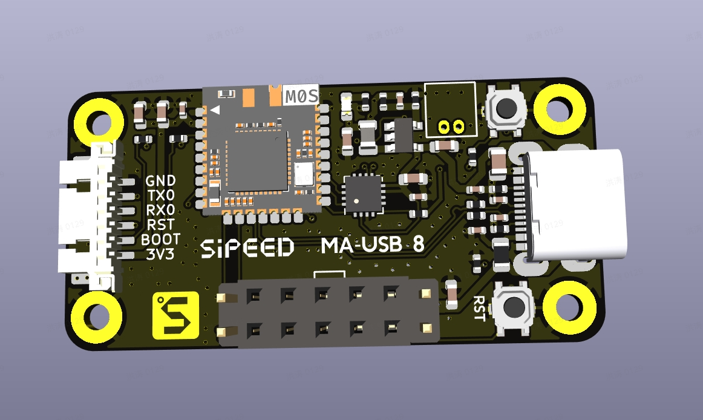
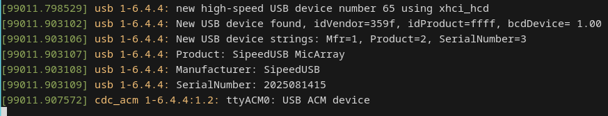
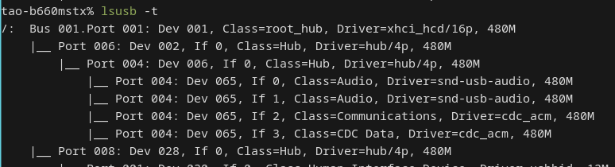
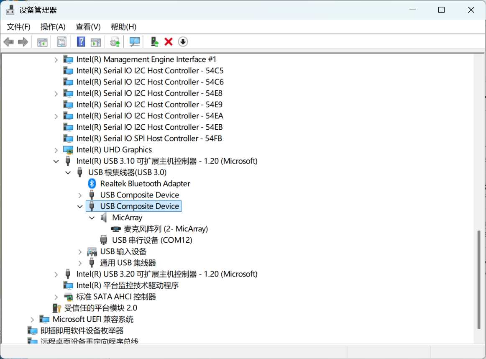
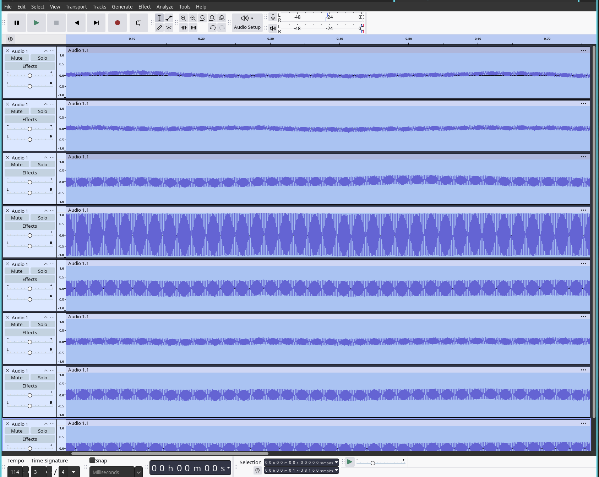
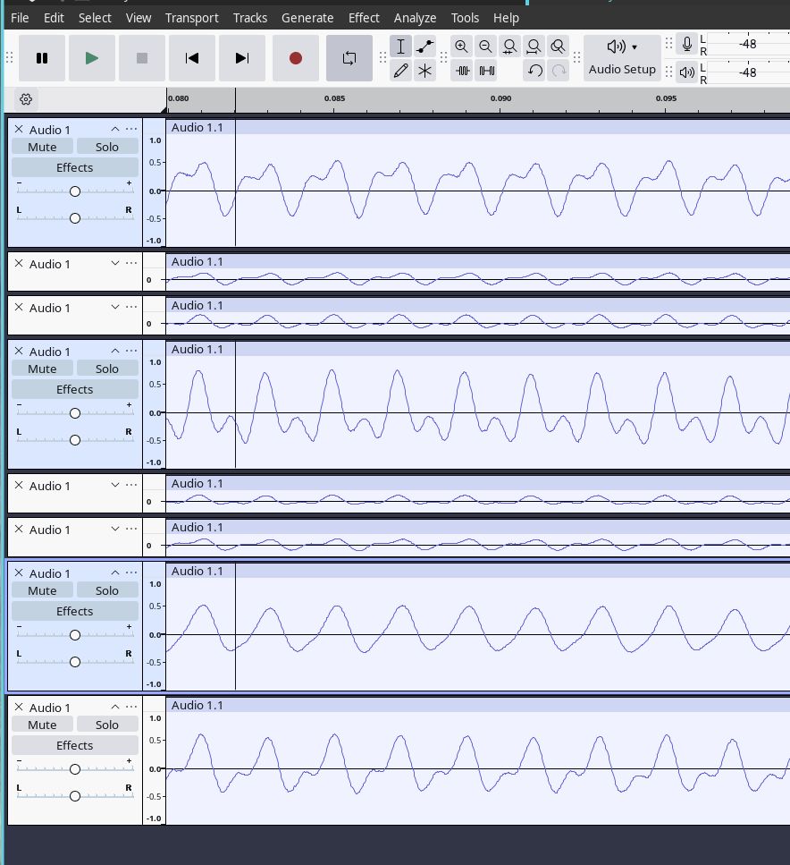

English
EnglishMicArray UAC Drive Board MA-USB8 — User Guide
Product overview

MA-USB8 is a USB audio + serial interface drive board designed for MicArray microphone modules. It forwards the array’s audio (via UAC2.0, 8 channels) and sends soundfield hotmap frames (via CDC ACM or UART) to a host PC or MCU. Common use cases include voice capture, noise suppression, beamforming, and soundfield visualization.
- UAC2.0 (USB Audio Class): 8 channels, PCM S16_LE, 48 kHz
- CDC ACM (USB virtual COM): 16×16 raw hotmap frames
- UART: 16×16 raw / HEX + pseudo-color hotmap frames at 2,000,000 bps (suitable for MCUs)
This document is a user guide for MA-USB8. It covers connection, device verification, audio capture, beamforming, how to read/parse hotmap frames, and common troubleshooting.
Quick start
Hardware and basic setup
- Use a data-capable 5V USB cable.
- Connect MA-USB8 to your host PC or to your MCU board via USB/USB2TTL.
- Choose a mode:
- Preferred: USB (UAC2.0 audio + CDC ACM serial) — on PC you can get multi-channel audio and hotmap frames together.
- Alternate: UART / USB2TTL (2,000,000 bps) — for MCU/embedded environments to get hotmap frames (HEX/pseudocolor) only.
We recommend installing Audacity on your PC for testing/recording.
Before proceeding, check:
- That the USB cable is firmly connected and the board is powered (check LEDs).
- That the device appears in your system (Linux:
/dev/ttyACM0or/dev/ttyUSB0; Windows: look for MA-USB8 audio/CDC device in Device Manager).
Verify the device (Linux)
- After plugging in, run:
dmesg | tail— you should see/dev/ttyACM0andSipeedUSB MicArray.lsusb— to inspect device IDs.
- Check audio devices with:
arecord -l— you should find an 8-channel UAC device.pactl list short sources— PulseAudio users can check sources.


Verify the device (Windows)
Open Device Manager and confirm the device appears as a multi-channel audio device and a CDC ACM serial port. Use software that supports multi-channel UAC capture (e.g., Audacity configured with WASAPI) to record all 8 channels.

Record 8 channels (UAC2.0)
Linux (CLI)
Find the card/device and record 8 channels using arecord:
arecord -l # find the card / device
arecord -D hw:1,0 -f S16_LE -c 8 -r 48000 -t wav -d 10 test_8ch.wav
Extract and play one channel (e.g., CH6):
sudo apt install sox
sox test_8ch.wav ch6.wav remix 7 # sox uses 1-based channel indexing; `remix 7` extracts CH6 (zero-based→1-based)
aplay ch6.wav
Notes:
- Device indexes and channel mapping may vary between systems and drivers. Use
arecord -l/aplay -lto confirm hw index and channel mapping. - If Windows only shows 2 channels, use WASAPI in Audacity or use Linux for full multi-channel capture.
Audacity (GUI)
- Open Audacity → Edit → Preferences → Devices, and select MA-USB8 as the recording device.
- Choose the number of channels (8) in the recording options.
- Record and inspect the tracks; you can solo or export an individual channel as needed.

Windows: Use WASAPI to enable 8-channel capture
Windows requires using WASAPI in Audacity to expose all 8 channels — choose the MA-USB8 device under WASAPI and select 8 channels.
Beamforming demo
MA-USB8 supports 12 beamforming directions: 0..9, A, B (each step = 30°).
To point the beam to CH0 (0°) and monitor the beamformed output on CH6:
- Open the CDC ACM serial device (e.g.,
/dev/ttyACM0) with a serial terminal:
minicom -D /dev/ttyACM0 -H
- Type a single character (e.g.,
0) to set the beam direction to 0°. The beamformed audio will be output on CH6. - Record or play CH6 and confirm that sound from the selected direction is amplified and other directions are suppressed.
Note: 0..9, A, B map to angles 0°, 30°, …, 330°.

Observe hotmap frames (CDC ACM / UART)
The board outputs hotmap frames via CDC ACM (/dev/ttyACM0) or via UART (/dev/ttyUSB0 at 2,000,000 bps).
Quick check with minicom / picocom
- CDC ACM (raw):
minicom -D /dev/ttyACM0 -H
- UART (picocom raw/hex):
picocom -b 2000000 --imap 8bithex /dev/ttyUSB0
- In picocom, press
Fand thenCto switch to HEX + color map (some versions/devices).


(Developer note: use hexdump -C or cat /dev/ttyACM0 | hexdump -C -v | head -n 20 to validate frame structure manually.)
Quick serial commands (user cheat sheet)
- Set beamforming direction: send
0..9,A, orBto the serial port; CH6 will be the beamformed output. - LED on/off:
e(off) /E(on). - Toggle 16×16 ASCII hotmap print:
f/F(UART only).
Other developer-level commands are shown in the Developer Reference section.
Troubleshooting
- Windows shows only 2 channels: This is either a Windows driver limitation or your recording software. Use WASAPI in Audacity or switch to Linux for full 8-channel capability.
- Cannot access serial device: user permission issue — add your user to the
plugdevgroup or create a udev rule (see Developer Reference):
sudo usermod -a -G plugdev $USER
# Log out and log in again for the group change to take effect
- CDC ACM does not output frames: Confirm the board is in CDC ACM + UAC modes (not only UAC). Close other applications that may occupy the serial port.
- UART output appears garbled: Ensure
2000000 bpsselection; usepicocom -b 2000000orminicom -b 2000000. On Windows, ensure the correct USB-serial driver for your adapter (e.g., CH340/CH341/CH552) is installed.
Firmware
Download the firmware from the assets and follow the combo8 firmware update guide:
Developer Reference (protocol, code examples, full command list)
Hotmap Frame Format
| frame | bytes | value |
|---|---|---|
| head | 16 | 16 × 0xFF |
| data | 16×16 | 256 bytes (one byte per cell, 0..255), row-major order (HxW) |
Total packet length = 16 + 256 = 272 bytes. The header is used for frame alignment and detection; payload is the 256-byte matrix of intensity values.
Full command table
| Command | Input (Lower/Uppercase: Off/On) | Default | Remarks | Input Source |
|---|---|---|---|---|
| Set UAC CH6 beam direction | 0..9, A, B | 0 | angle = value × 30° (0..B → 0°,30°,…330°). Corresponds to the clockwise direction starting from microphone 0 as per the microphone array. | Any (serial/CDC) |
| Adjust source localization activation threshold | t/T | 650 | t: decrease by 50; T: increase by 50; adjustable range: 0–2000 | Any (serial/CDC) |
| UART sound-map pseudocolor toggle | c/C | c | Requires ASCII 16×16 printing enabled | UART only |
| UART internal debug info toggle | d/D | d | Enables/disables debug output | UART only |
| LED indicator toggle | e/E | E | E = on, e = off | Any |
| UART 16×16 ASCII print toggle | f/F | f | Toggle printing 16×16 sound-field map as ASCII | UART only |
| Restore defaults | R | - | Restore board default settings | Any |
udev & Permission (Linux)
Create a udev rule if needed (replace vendor/product with your device’s lsusb IDs):
# /etc/udev/rules.d/99-ma-usb8.rules
SUBSYSTEM=="tty", ATTRS{idVendor}=="XXXX", ATTRS{idProduct}=="YYYY", MODE="0666", GROUP="plugdev"
# Example (Sipeed vendor id)
SUBSYSTEM=="tty", ATTRS{idVendor}=="359F", MODE="0666", GROUP="plugdev"
Serial/USB Notes
- CDC ACM (
/dev/ttyACM0) is bound to the Linuxcdc_acmdriver. If hotmap frames don’t appear, ensure the device is not held by another program. - UART (
/dev/ttyUSB0) typically uses USB-to-serial adapters (CH34x/CH340/CH552); install proper drivers on Windows if necessary.
That’s it — this English translation mirrors the Chinese guide and preserves the commands, examples, and images.